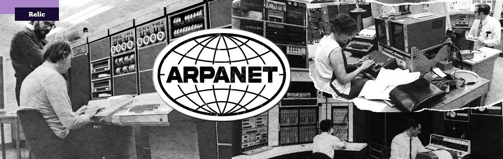
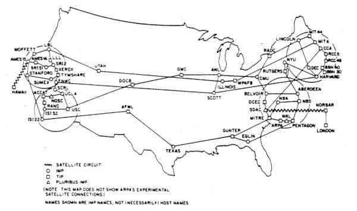
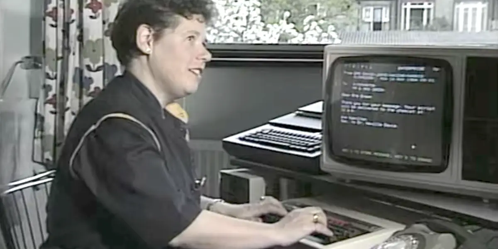
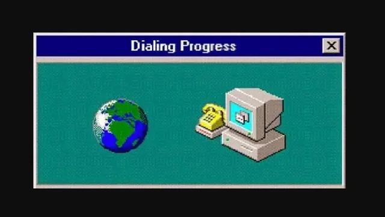
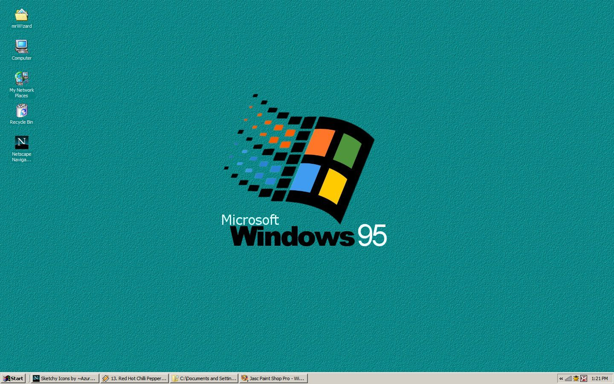
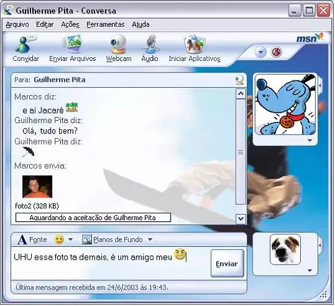
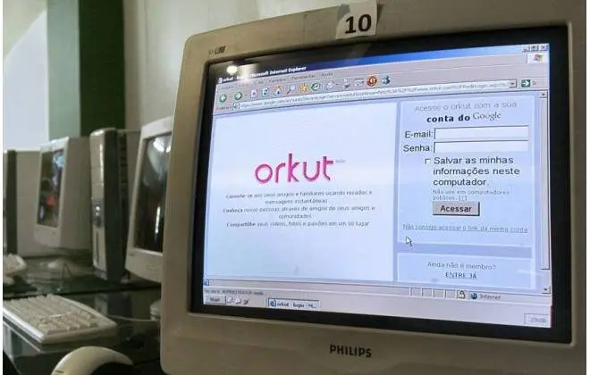
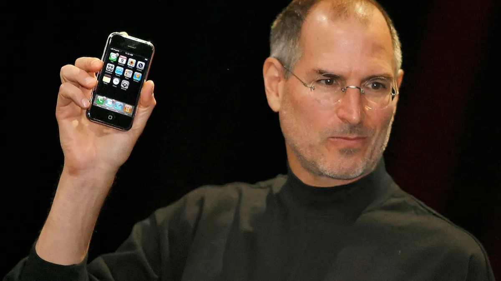
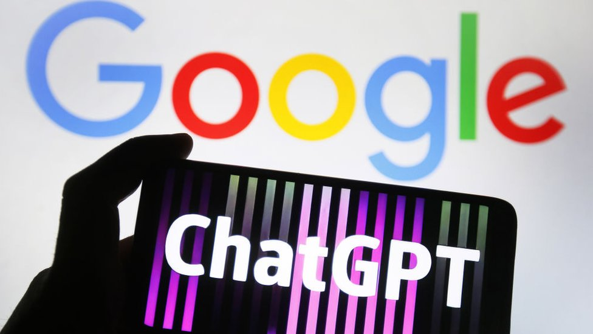

🖥️
1940 - 1950
Computadores enormes para uso científico

Contexto inicial.
Os computadores já existiam, mas eram máquinas enormes
ocupando uma sala inteira, sendo apenas para a função de
armazenar dados e fazer cálculos, para uso científico e
governamental.
🛡️
1958
Nasce a DARPA para defesa dos EUA

Criação da DARPA.
(Defense Advanced Research Projects Agency), Agência para o uso dos militares dos estados unidos,
que financiaria a base da internet.
🌐
1966-1970
Nasce o projeto ARPANET

Lawrence Roberts entra no projeto da DARPA para criar a
ARPANET (Advanced Research Projects Agency Network) de em
1970 o seu projeto já conseguiu fazer com que diversos
computadores pelo país se conectarem.
📡
1974
Criação do protocolo TCP/IP

Uma nova versão do ARPANET foi criada e melhorada, o TCP/IP
(Transmission Control Protocol / Internet Protocol). Para que
máquinas fora da ARPANET, como satélites ou rádios, pudessem
se comunicar com outras máquinas. Nela inclusive já existia uma
espécie de email, onde já conseguiam se comunicar.
🚀
1980 – 1985
TCP/IP se torna padrão global

80s resolveram usar de vez o TCP/IP como principal ferramenta.
85 A internet, que na época ainda era chamada como ARPANET,
já era a principal rede de comunicação de alcance global.
🌍
1989-1991
Internet aberta ao público mundial

Tim Berners-Lee criou o WWW (World Wide Web), ele é usado
como um sistema de entregas de documentos em hipertexto
(http), que são conectados e podem ser acessados por
navegadores da web conectados a internet.
Esse novo sistema começou a ficar muito popular, sendo aberto
para todas as pessoas acessarem do mundo todo.
🧭
1993
Navegador Mosaic revoluciona acesso

Se nascia então um navegador, conhecido como Mosaic, em 5
anos depois, já se tinha mais de 200 mil sites hospedados na
internet.
💼
1995
Era comercial: Amazon e eBay

A internet começou a se tornar comercial. Foi o fim das
restrições militares e acadêmicas, e empresas passaram a
enxergar oportunidades de negócios. Surgiram grandes nomes
como a Amazon e o eBay.
💬
Final 90s
Mensagens instantâneas: ICQ e MSN

Além dos sites, as pessoas começaram a se comunicar em tempo
real pela internet. Primeiro veio o IRC (Internet Relay Chat),
depois o ICQ (1996), e em seguida o famoso MSN Messenger
(1999), que virou febre mundial.
👥
2004 – 2006
Nascem Facebook, YouTube e Twitter

Surgia a chamada Web 2.0, que permitia que os usuários não
fossem apenas consumidores de conteúdo, mas também
produtores. É nesse período que nascem as redes sociais que
mudariam o mundo digital: Facebook (2004), YouTube (2005) e
Twitter (2006).
📱
2007
iPhone leva internet ao bolso

O lançamento do iPhone pela Apple marcou a era dos
smartphones. A partir daí, a internet deixou de estar restrita ao
computador e passou a caber no bolso.
🎬
2010
Streaming: Netflix e Spotify dominam

A internet se consolidou como espaço de streaming e de serviços
digitais. Plataformas como Netflix e Spotify mudaram a forma de
consumir filmes e músicas.
🏠
2016
IoT: Casas inteligentes e Alexa

Com a Internet das Coisas (IoT), aparelhos do dia a dia passaram
a se conectar à rede. Surgiram assistentes virtuais como a Alexa
e o Google Home, além de casas inteligentes.
😷
2020
Pandemia acelera digitalização total

A pandemia da Covid-19 acelerou ainda mais a digitalização.
Videoconferências no Zoom e no Microsoft Teams, o ensino
remoto e o trabalho em casa fizeram a internet se tornar ainda
mais essencial no cotidiano.
🤖
2022 – Diante
IA Generativa transforma o digital

A internet entrou em uma nova fase com a Inteligência Artificial
generativa, como o ChatGPT e outras ferramentas que mudaram
a forma de criar textos, imagens e até programar.